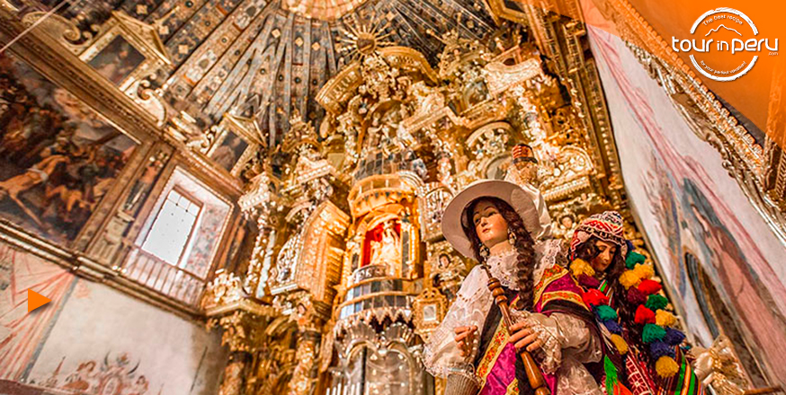

Música virreinal y ensambles nativos
El Ensemble Barroco de Sucre interpretará obras de Domenico Zipoli y maestros anónimos de la escuela altoperuana. Entrada libre con aforo limitado.
📅 15 de noviembre, 19:00 h - Templo de San Francisco
